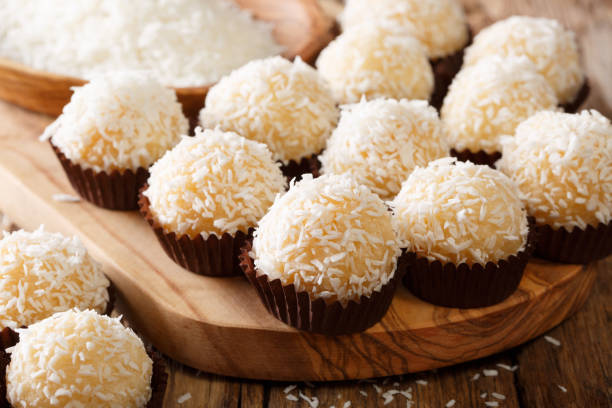
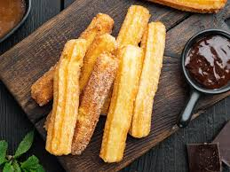
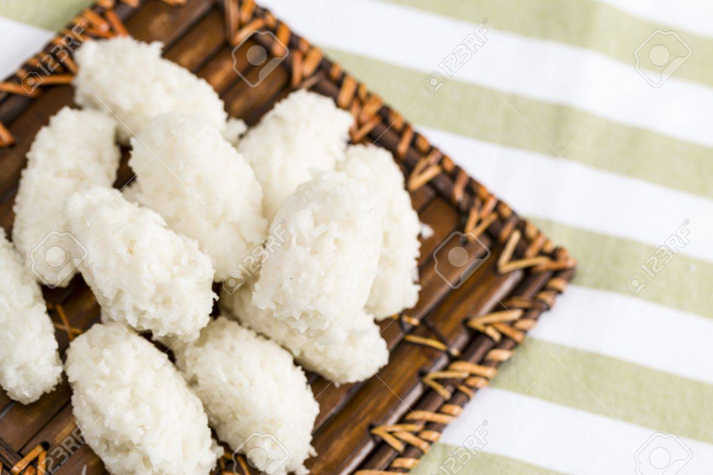
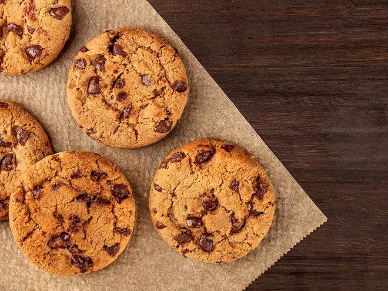
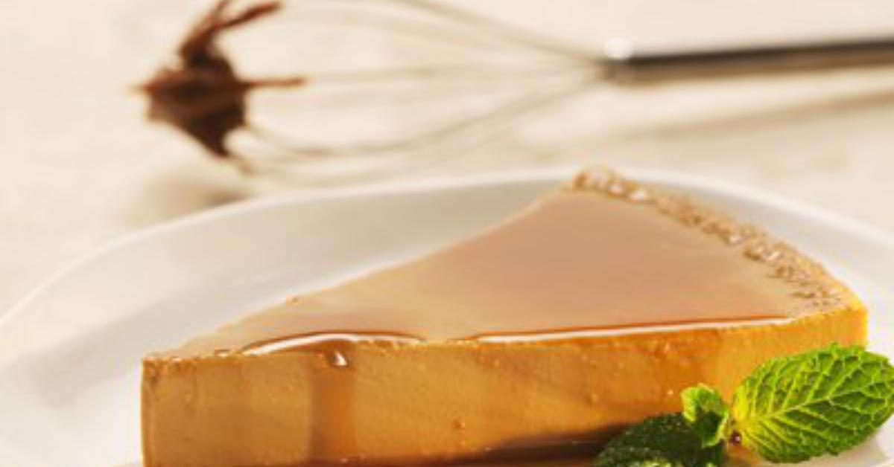
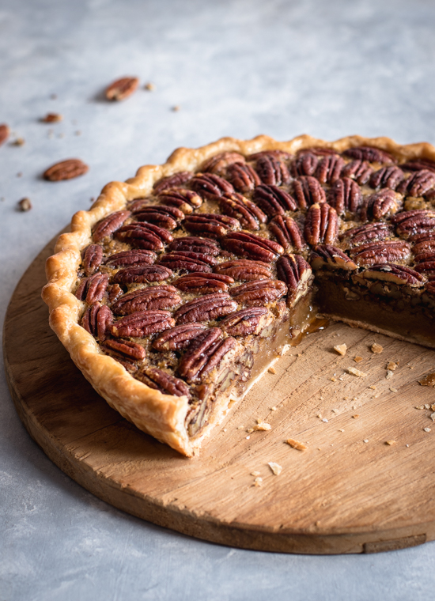

Amérique du Nord
Amérique du Sud
Beijinho
Ingrédients
- 395 ml de lait concentré sucré
- 100g de noix de coco râpée
- 1 cuillère à soupe de beurre
- 1/2 cuillère à café d'extrait de vanille
Instructions
- Dans une casserole, faire chauffer le lait concentré sucré avec le beurre à feu moyen.
- Remuer constamment jusqu'à ce que le mélange épaississe, environ 10-15 minutes.
- Ajouter la noix de coco râpée et continuer à cuire en remuant jusqu'à ce que la pâte se détache du fond de la casserole.
- Retirer la casserole du feu et laisser refroidir légèrement.
- Beurrer vos mains et former de petites boules avec la préparation.
- Rouler chaque boulette dans la noix de coco râpée.
- Laisser refroidir complètement avant de servir.

Brownie
Ingrédients
- 3 oeufs
- 80g de sucre
- 50g de farine
- 200g de chocolats
- 80g de beurre
Instructions
- Dans un saladier, fouetter les œufs, le sucre et la farine.
- Dans un bol, faire fondre le beurre et le chocolat au micro onde.
- Insérer le mélange de chocolat dans le saladier et mélanger.
- Beurrer le moule et verser la préparation dans celui-ci.
- Enfourner le tout a 180 degrés Celsius pour 15 minutes.

Cheesecake
Ingrédients
- 150g de speculoos
- 500g de philadelphia
- 2 oeufs
- 70g de beurre
- 100g de sucre
Instructions
- Mixer les biscuits en miettes.
- Fondre le beurre et le mélanger avec les spéculoos.
- Versez le mélange de spéculoos dans le moule.
- Faire cuire la base au four pendant 10 minutes à 180°C, et laissez refroidir.
- Dans un saladier, battez le fromage Philadelphia avec le sucre jusqu’à obtenir un mélange lisse.
- Ajouter les œufs un à un en mélangeant bien après chaque ajout.
- Verser cette préparation sur la base de spéculoos.
- Faites cuire le cheesecake au four pendant 45-50 minutes à 160°C.
- Placez-le au réfrigérateur pendant au moins 4 heures.

Churros
Ingrédients
- 250 ml d'eau
- 100 g de beurre
- 1 pincée de sel
- 200 g de farine
- 2 œufs
- 1 cuillère à soupe de sucre
- Huile pour la friture
- Sucre et cannelle pour l'enrobage
Instructions
- Dans une casserole, faire chauffer l'eau, le beurre et le sel jusqu'à ébullition.
- Ajouter la farine d'un coup et remuer jusqu'à obtenir une pâte homogène.
- Laisser refroidir légèrement, puis ajouter les œufs un à un en remuant bien.
- Mettre la pâte dans une poche à douille et former des boudins de pâte de 10 cm de long.
- Faire chauffer l'huile dans une poêle et y faire frire les churros jusqu'à ce qu'ils soient dorés.
- Égoutter sur du papier absorbant, puis les enrober de sucre mélangé à de la cannelle.

Cocada
Ingrédients
- 500 g de noix de coco râpée
- 250 g de sucre
- 100 ml d'eau
- 1 cuillère à soupe de lait
Instructions
- Dans une casserole, mélanger l'eau, le lait et le sucre.
- Porter à ébullition en remuant constamment.
- Ajouter la noix de coco râpée et cuire à feu doux, en remuant fréquemment, jusqu'à ce que la pâte devienne épaisse.
- Verser la préparation dans un moule et laisser refroidir.
- Découper en carrés une fois bien refroidi. Servir frais.

Cookies
Ingrédients
- 1 oeuf
- 80g de sucre
- 80g de beurre
- 150g de farine
- 7g de levure chimique
- 100g de chocolats
Instructions
- Dans un saladier, malaxer le beurre ramolli avec le sucre.
- Ajouter l'œuf et une pincée de sel au mélange.
- Verser progressivement la farine, la levure et bien mélanger.
- Faire de petites boulesa la main ou avec des cuillère, les déposer une plaque et l’enfourner à 180 degrés celsius pour 10 minutes

Cuca de Banana
Ingrédients
- <300ml de lait concentré sucré
- 300ml de lait
- 3 œufs
- 1 cuillère à soupe de sucre
Instructions
- Préchauffer le four à 180°C. Beurrer un moule à gâteau.
- Dans un saladier, mélanger la farine, la levure et le sucre.
- Ajouter les œufs et le beurre fondu, puis bien mélanger.
- Couper les bananes en rondelles et les ajouter à la préparation.
- Verser dans le moule et cuire 35-40 minutes.
- Laisser refroidir avant de servir.

Dulce de Leche Flan
Ingrédients
- <300ml de lait concentré sucré
- 300ml de lait
- 3 œufs
- 1 cuillère à soupe de sucre
Instructions
- Dans une petite casserole, faire fondre le sucre à feu moyen jusqu'à ce qu'il devienne doré.
- Verser le caramel dans un moule.
- Mélanger dans un blender le lait concentré, le lait et les œufs.
- Verser la préparation dans le moule caramélisé.
- Enfourner à 160°C au bain-marie pendant 45-50 minutes, jusqu'à ce que le flan soit pris.
- Laisser refroidir, démouler et réfrigérer avant de servir.

Tarte ax pacanes
Ingrédients
- 270g de farine
- 2 oeufs
- 70g de sucre de cassonade
- 100g de beurre
- 375ml de crème à cuisson 15%
- 150g de cassonade
- 60ml de sirop d'érable
- 60g de farine
- 2 oeufs
- 200g de pacanes
Instructions
- Dans un saladier, fouetter les oeufs, le sucre et la farine
- Ajouter le beurre ramollis et malaxer la pates a la main jusqu'à que ce soit homogène
- Faire une boule, aplatir la pâte dans un moule pour tarte et avec la fourchette, piquer la tarte dans son fond
- Dans une casserole, insérer la crème, le sucre, le sirop d'érable, la farine et porter le tout à ébullition.
- Laisser tiédir et ajouter les oeufs, toute en remuant
- Verser le mélange dans la pâte à tarte et ajouter les pacanes
- Enfourner le tout a 180 degres Celsius pendant 35 minutes et le faire refroidir 30 minutes au frigo

Tarte ax pommes
Ingrédients
- 270g de farine
- 2 oeufs
- 70g de sucre
- 100g de beurre
- 4 pommes
- cannelles
Instructions
- Dans un saladier, fouetter les oeufs, le sucre et la farine
- Ajouter le beurre ramollis et malaxer la pâte a la main jusqu'à que ce soit homogène
- Faire une boule, aplatir la pâte dans un moule pour tarte et avec la fourchette, piquer la tarte dans son fond
- Ajouter la compote dans la tarte et déposer les pommes préalablement éplucher et couper
- Sur le dessus, ajouter légèrement de la cannelle et du sucre
- Enfourner le tout a 180 degrés Celsius pour 20 minutes